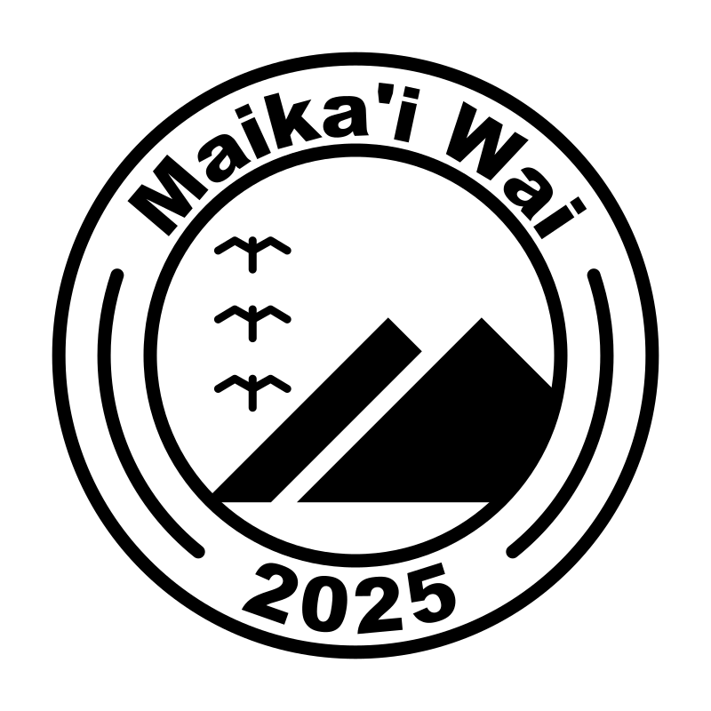
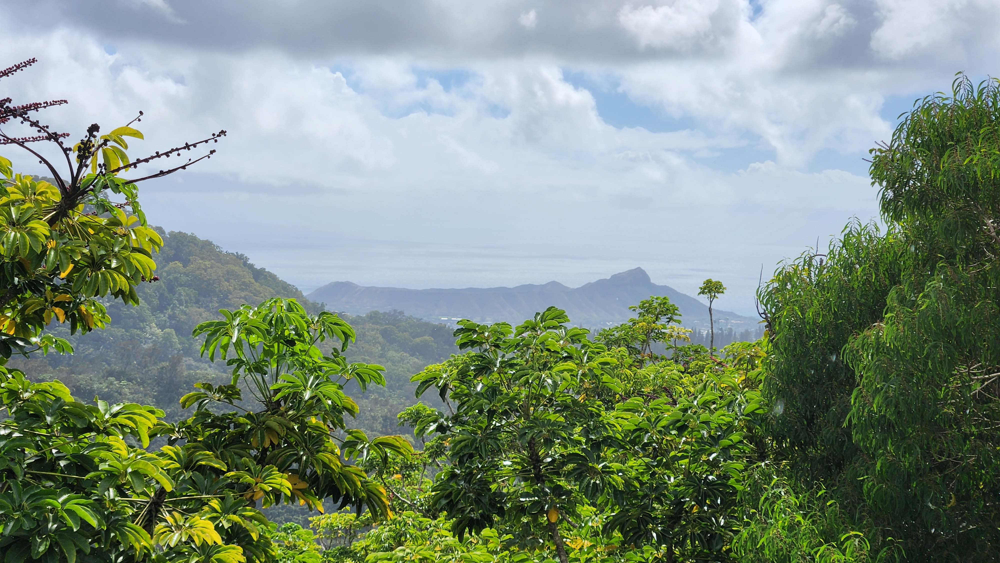
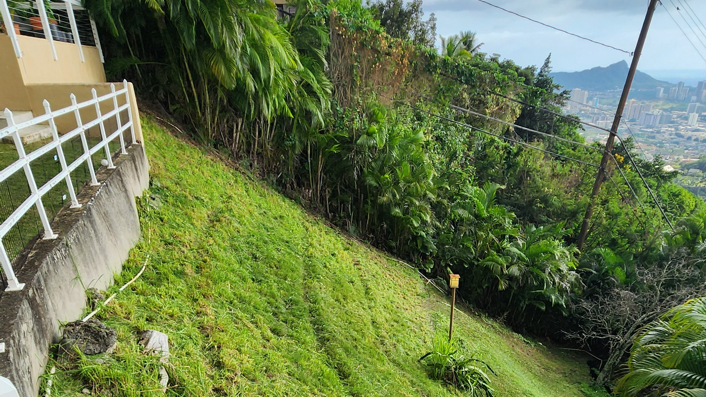
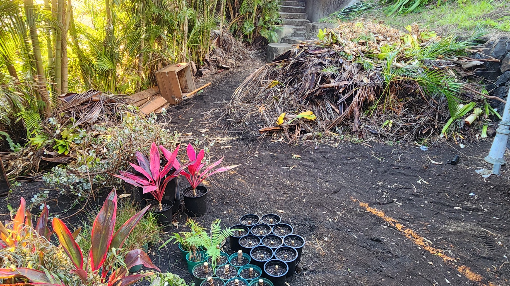
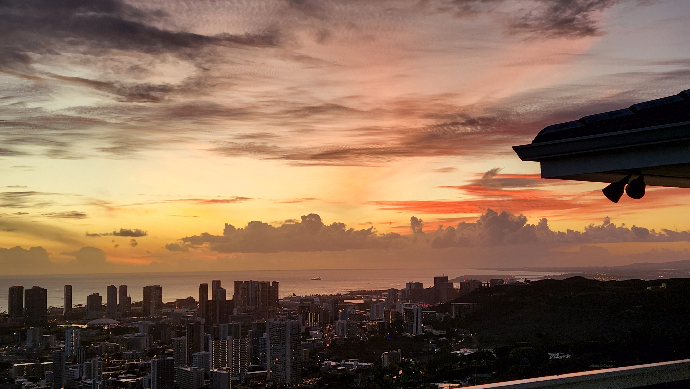

Maikaʻi Wai
ʻAhahui o Māla Lanakila

Maikaʻi Wai — He ʻoihana e kūkulu ana i nā māla lanakila
Maikaʻi Wai — A company that builds victory gardens.

Ke Kuleana (Mission)
Ma o ka ʻahahui o nā Hoa ʻāina a me nā Hoa hana akamai, e hoʻolālā, e kau, a e mālama mākou i nā māla lanakila i mea e ola ai ka lepo, e ulu ai ka ʻai, a e paʻa ai ka pilina o ke kaiāulu me ka ʻāina.
Through a guild of land sponsors and skilled Fellows, we design, install, and care for victory gardens so the soil can live, food can grow, and the connection between community and ʻāina can be strengthened.

Ka ʻIke (Vision)
ʻO Maikaʻi Wai – ʻAhahui o Māla Lanakila ka ʻahahui e hoʻohui ana i ka poʻe nona ka ʻāina a me ka poʻe mahiʻai akamai ma lalo o ke aloha ʻāina.
Maikaʻi Wai – Guilded Fellowship of Māla Lanakila brings landowners and skilled cultivators together in a guild grounded in aloha ʻāina.
Inā lilo ʻoe i Hoa ʻāina, e hāʻawi ʻoe i ka ʻae no kou ʻāina, a e ʻike ʻoe i kona ulu ʻana i homestead Hawaiʻi e ola ana.
As a Guild Member, you license your land and watch it become a living Hawaiian homestead.
He māla lanakila e hua ai ka ʻai no kou papaʻaina, i hoʻonui ʻia me nā mea kanu ʻōiwi, ka lepo hoʻomomona, a me ka mālama kahiko.
It is a productive garden that grows food for your table, enriched with native plants, compost, and traditional care.
ʻO nā Hoa hana, mai ka haumāna a hiki i ke alakaʻi, ka poʻe e hana lima ana me ke akamai ma ka mahiʻai, ka wai, a me nā hana moʻomeheu.
Guild Fellows, from apprentices to leads, are the ones who do the hands-on work with skill in gardening, water systems, and cultural practices.
Ma o ka Pūnaewele Kālepa a me ka Mākeke, hiki i nā Hoa ʻāina ke kālepa i nā waiwai, a hiki i ka lehulehu ke loaʻa nā mea i hana ʻia, e hoʻoikaika ana i ka hana noʻeau a me ka waiwai o ka ʻahahui.
Through the Guild Trade Network and the Guild Market, Guild Members can trade goods, and the public can obtain processed materials, strengthening cultural craft and the guild’s resources.
He ʻahahui akamai kēia ma loko o ke ʻano ʻahahui kālepa, kahi e hui pū ai ka ʻāina, ka ʻike, a me ka nui i mea e ikaika ai ke kaiāulu a me ka ʻāina no nā mea a pau.
This is a skilled fellowship within a merchant guild structure, where land, knowledge, and abundance come together to strengthen community and ʻāina for everyone.

Pehea e Nona ai (How Ownership Works)
No nā Hoa ʻāina ka nona piha o ko lākou ʻāina a me ke ʻano ola o ia ʻāina.
Guild Members fully own their land and the living landscape.
No ka ʻAhahui nā mea i kau ʻia — nā ʻōnaehana wai, nā pahu kanu, nā hale ʻupena, nā ʻōnaehana lepo hoʻomomona, a me nā mea hana — i mālama pono ʻia, hoʻomaikaʻi ʻia, a kākoʻo ʻia e nā Hoa hana i ka wā lōʻihi.
The Guild owns the infrastructure that is installed — irrigation systems, planter boxes, net houses, compost systems, and tools — so they can be properly cared for, improved, and supported by the Fellows over time.
ʻO kēia ʻano like e pale ana i ka ʻāina o ka Hoa ʻāina a e ʻae ana i ka māla e ikaika aʻe ma lalo o ka mālama like.
This shared way protects the Guild Member’s land while allowing the garden to grow stronger under collective care.
Inā haʻalele ka Hoa ʻāina i ka ʻAhahui, nona ʻo ia i kona ʻāina a me ke ʻano o ka ʻāina.
If a Guild Member leaves the Guild, they keep their land and the living landscape.
Hiki ke kūʻai ʻia nā mea a ka ʻAhahui ma ke kumu kūʻai kūpono i emi iho, a i ʻole e wehe ʻia e ka ʻAhahui ke hiki.
The Guild’s infrastructure may be purchased at a fair, reduced value, or removed by the Guild when practical.
Aia nā koi ma ka ʻaelike lālā.
The specific terms are in the membership agreement.

Lālā (Membership)
Ua wehewehe ʻia ma luna pehea e hoʻonohonoho ʻia ai ka ʻahahui. ʻO ke ʻano maʻalahi e hoʻomaka ai i ia pilina, ʻo ka lālā.
The structure above describes how the guild is organized. The practical way to begin that relationship is through membership.
Lālā Mālama Māla Lanakila
$1,000 i kēlā me kēia mahina
Māla Lanakila Maintenance Membership
$1,000 per month
He pilina pule e kālele ana i ka mālama a me ka hoʻoulu mālie o kou ʻāina.
A dedicated weekly relationship focused on the care and steady cultivation of your land.
I kēlā me kēia pule, hoʻolilo au i ka lā holoʻokoʻa ma kou wahi e mālama i ka ʻāina, e lawelawe i ka ʻōnaehana lepo hoʻomomona, e hoʻoulu a mālama i nā mea kanu i loko o nā ipu, a e kākoʻo i ka wai kulu ma luna o ka lepo inā pono. He hana paʻa, noʻonoʻo, a paʻa i ke aloha ʻāina — e kūkulu ana i ke olakino o ka lepo, ka ikaika o nā mea kanu, a me ke kūpaʻa lōʻihi me ka wikiwiki ʻole i nā mea paʻa.
Each week I spend a full day on your property maintaining the landscape, managing the compost system, propagating and tending container plants, and supporting temporary above-ground irrigation as needed. The work is consistent, thoughtful, and rooted in aloha ʻāina — building soil health, plant vitality, and long-term resilience without rushing into permanent infrastructure.
Nā mea i komo:
• Ka mālama ʻāina o kēlā me kēia pule (ʻoki mauʻu, ʻoki lālā, ka
wehe ʻana i nā nāhelehele, a me ka hoʻomaʻemaʻe)
• Ka lawelawe ʻana i ka ʻōnaehana lepo hoʻomomona
• Ka hoʻoulu a me ka mālama ʻana i nā mea kanu i loko o nā ipu
• Ke kākoʻo ʻana i ka wai kulu ma luna o ka lepo no ke olakino o nā
mea kanu
• Ka nānā ʻana a me nā memo e pili ana i ka lepo, nā mea kanu, a me
nā ʻōnaehana
• Ka kamaʻilio pololei a me ka mālama ma muli o ka pilina
What’s included:
• Weekly landscape maintenance (mowing, trimming, edging, weeding,
and cleanup)
• Ongoing compost system management and turning
• Propagation and care of potted and container plants
• Temporary above-ground drip irrigation support for plant health
• Progressive observation and notes on soil, plant, and system
needs
• Direct communication and relationship-based care
Nā mea ʻaʻole i komo (e loaʻa ma hope ke loaʻa ka
laikini kūpono):
• Ke kau ʻana i nā ʻōnaehana wai paʻa
• Nā hale ʻupena a i ʻole nā mea paʻa ʻē aʻe
• Ke kūkulu nui ʻana i nā māla a i ʻole ka hoʻoponopono ʻāina
• Nā ʻōnaehana kanu nui
What’s not included (available later under proper
licensing):
• Permanent irrigation installation
• Permanent nursery structures or hardscape
• Major bed construction or grading
• Large-scale planting systems
He lālā kēia, ʻaʻole he lawelawe hoʻokahi. Ke hoʻolilo nei ʻoe i ka mālama paʻa o ka ʻāina a me ka pilina hana me kekahi i kūpaʻa i ka ʻike lōʻihi o ka māla lanakila e ola ana.
This is a membership, not a one-off service. You are investing in consistent stewardship of the land and a working relationship with someone committed to the long-term vision of a living māla lanakila.